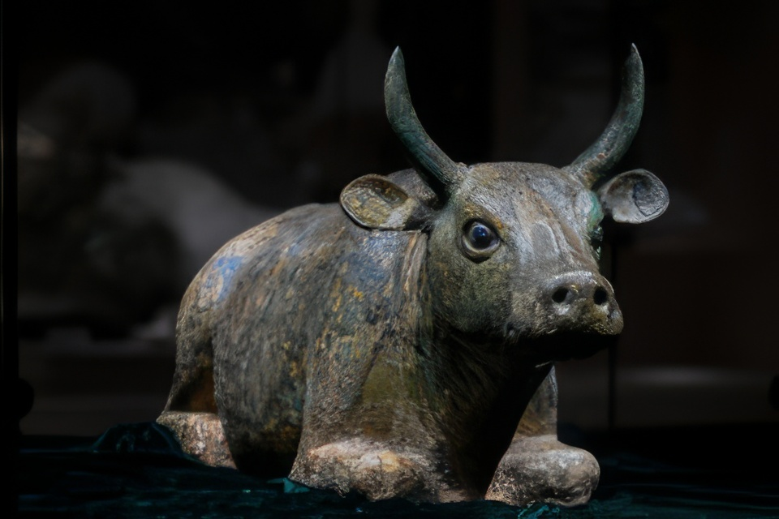
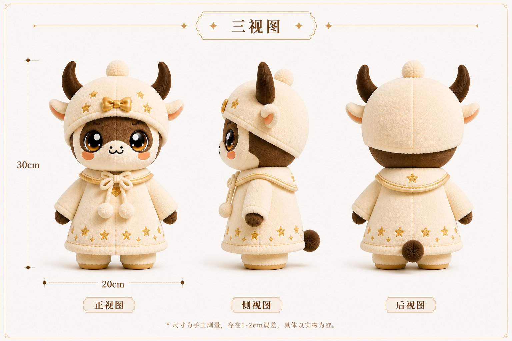
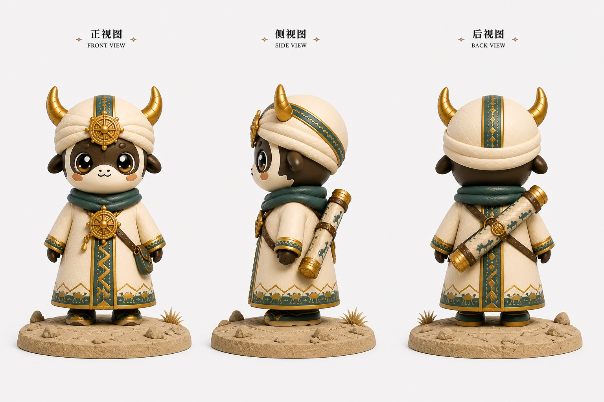
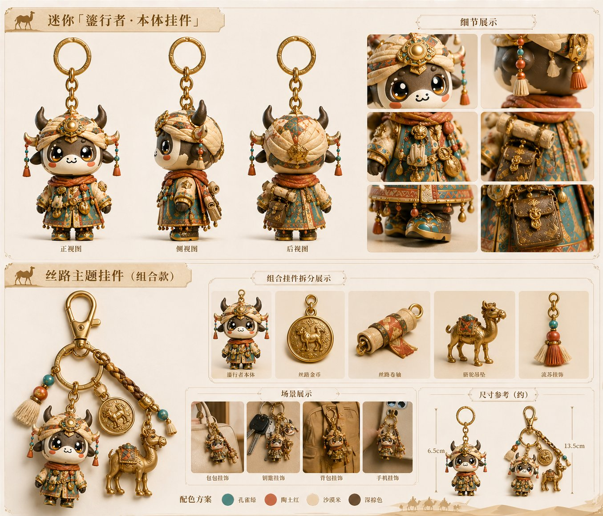
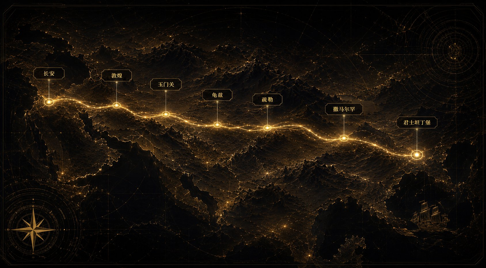

西夏鎏金铜牛 · 一物两译的数字文创IP
鎏光负责陪伴，鎏途负责远行。
从宁夏博物馆藏西夏鎏金铜牛出发，
让文物从展柜走进手心，也走进你的故事。

来自西夏的鎏金铜牛，安静卧在展柜之中。
它不是被时间封存的标本，而是关于守护、力量与文明的证词。
一个存续189年、被遗忘了800年的王朝
四件文创产品，从ZBrush模型到手工上色成品，每一件都扎根于文物研究



七大文明坐标 · 横跨欧亚大陆 · 11世纪西夏商队的行走路线

三步选择，让疗愈向导鎏光牵起你的手，进入鎏途的丝路叙事世界
点击选择起点城市，再选择你此行的目的地
你以何种身份踏上这段旅程，将决定沿途的遭遇与见闻
给自己一个旅者称号，再选择此行的心境
丝路上，每个行者都有一段只属于自己的旅程。
On the Silk Road, every traveler carries a story uniquely their own.